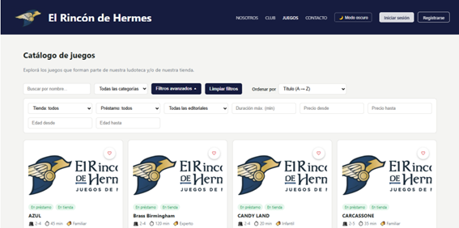

Proyecto grupal · Práctica Profesional 2 · 2026
ControlAR – El Rincón de Hermes
Sistema web de gestión para un club de juegos de mesa de Salta: tienda con carrito y pago con Mercado Pago, ludoteca con reservas anticipadas y panel de administración con reportes. Presentado en la Exposición de Proyectos Informáticos (12/11/2026).
Mi rol: desarrollo del backend (API REST).
- Python
- FastAPI
- SQLAlchemy
- PostgreSQL
- JWT
- pytest